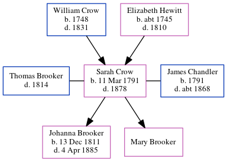

Sarah Chandler (née Crow) 1791 - 1878
[ Home ] | [ Calendar ] | [ Surnames Index ] | [ Errors ] | [ Family History ]The youngest of 3 children of William Crow and Elizabeth Hewitt, Sarah Crow, the 4 times great-grandmother of Nigel Horne, was born in Minster, Thanet, Kent, England on 11 Mar 17911,2,3,4, was baptised there at St Mary the Virgin on 13 Mar 1791 was married twice - to Thomas Brooker (on 14 Jul 1811 in Minster) James Chandler (on 31 Aug 1816 in Minster, following the death of Thomas in 1814). She had 2 children, both with Thomas Brooker: Johanna and Mary.
During her life, she was living at her birthplace in 18411, in 18512 and in 18613 which is where she died in 18784. She was buried there at St Mary the Virgin on 2 Apr 1878.
Parents
- William was born in 1748
- Elizabeth was born c. 1745
Children
- Johanna was born on 13 Dec 1811
- Mary was born c. 7 Nov 1813
Citations
- 1841 England Census Online publication - Provo, UT, USA: The Generations Network, Inc., 2006.Original data - Census Returns of England and Wales, 1841. Kew, Surrey, England: The National Archives of the UK (TNA): Public Record Office (PRO), 1841. Data imaged from the National
- 1851 England Census Online publication - Provo, UT, USA: The Generations Network, Inc., 2005.Original data - Census Returns of England and Wales, 1851. Kew, Surrey, England: The National Archives of the UK (TNA): Public Record Office (PRO), 1851. Data imaged from the National (Relation to Head of House: Wife)
- 1861 England Census Online publication - Provo, UT, USA: The Generations Network, Inc., 2005.Original data - Census Returns of England and Wales, 1861. Kew, Surrey, England: The National Archives of the UK (TNA): Public Record Office (PRO), 1861. Data imaged from the National (Relation to Head of House: Wife)
- England & Wales, FreeBMD Death Index: 1837-1915 Online publication - Provo, UT, USA: The Generations Network, Inc., 2006.Original data - General Register Office. England and Wales Civil Registration Indexes. London, England: General Register Office. © Crown copyright. Published by permission of the Cont
Media
England & Wales deaths 1837-2007 - BMD/D/1878/2/AZ/000059/326
Kent, Canterbury Archdeaconry baptisms 1538-1912 - GBPRS/CANT/B/96508805
Kent, Canterbury Archdeaconry burials 1538-1988 - GBPRS/CANT/D/95349190
1871 England, Wales & Scotland Census Transcription - GBC-1871-0014270594
England Marriages 1538-1973 - R_848032310/2
Family Tree
Map
Generated by ged2site. Last updated on Jul 3, 2024
Known Issues
Marriage date (14 Jul 1811) has no citations
Burial date (2 Apr 1878) has no citations